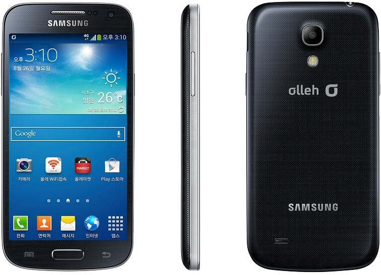

삼성 갤럭시 S4 미니
1. 외관

삼성전자가 2013년 3월에 공개한 갤럭시 S4의 파생 모델로, 2013년 6월에 공개한 안드로이드 스마트폰.
2. 사양
| 프로세서 | 퀄컴 스냅드래곤 400 MSM8930AB SoC. Qualcomm Krait 300 MP2 1.7 GHz CPU 퀄컴 Adreno 305 GPU | ||
| 메모리 | 1.5 GB LPDDR2 SDRAM, 8 / 16 / 32 GB 내장 메모리, micro SDXC (최대 64 GB 지원) | ||
| 디스플레이 |
4.3인치 qHD(960 x 540) S-Stripe RGB 서브픽셀 방식의 삼성D Super AMOLED 멀티터치 지원 정전식 터치 스크린 |
||
| 네트워크 | 기본 | HSPA+ 42Mbps, HSDPA & HSUPA & UMTS, GSM & EDGE | Wi-Fi 802.11a/b/g/n, 블루투스 4.0+LE, NFC |
| CM | CDMA & EV-DO Rev. A | ||
| 카메라 | 전면 190만 화소, 후면 800만 화소 AF 및 LED 플래시 | ||
| 배터리 | Li-lon 1900 mAh | ||
| 운영체제 | 안드로이드 4.2 → 4.3[2] (Jelly Bean) → 4.4 (KitKat) | ||
| 규격 | 61.3 x 124.6 x 8.94 mm, 107g | ||
3. 상세
2013년 삼성전자의 플래그쉽 스마트폰이자 갤럭시 S 시리즈의 4세대 모델인 갤럭시 S4의 소형화 파생 모델이다. 전작은 당연히 갤럭시 S III mini로, 한국 출시 이후 붙여진 별칭으로는 '갤포미니'와 '포미니' 등이 있다.
RAM 용량은 1.5 GB로, 전작보다 512 MB 늘었고, 본가보다 512 MB 줄었다. 내장 메모리는 8 GB, 16 GB 그리고 32 GB 모델로 나뉘며 micro SD카드를 최대 64 GB까지 지원한다.